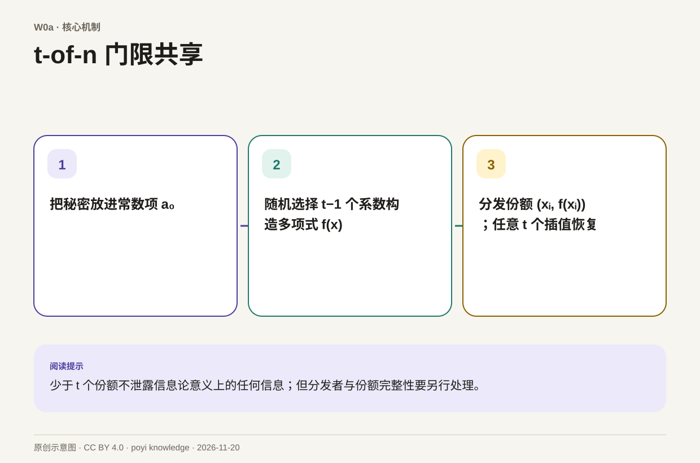
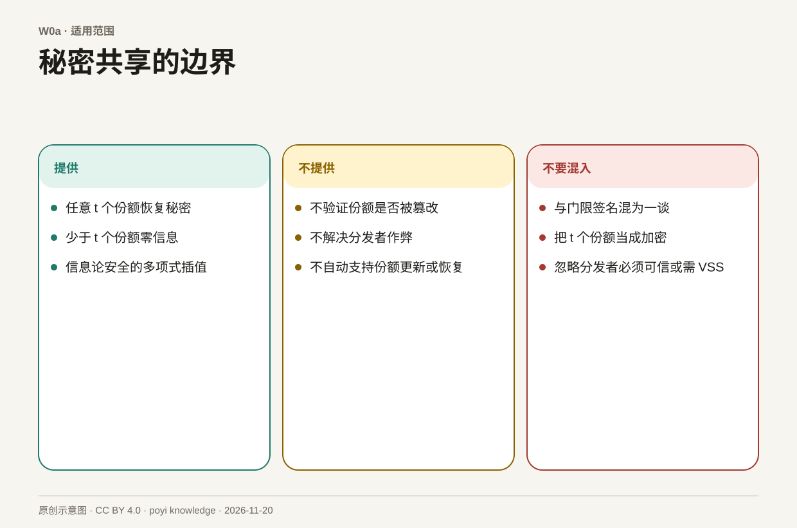

原理与机制
算法：Shamir 门限秘密共享（Shamir Secret Sharing）。Shamir 门限秘密共享（SSS）回答一个很朴素的问题：一把密钥，怎么拆成 n 份，让其中任意 t 份能拼回来、少一份什么都看不出来？
设秘密是 s（可以当成一个大整数，或者按字节拆开分别处理）：
1.选一个大素数 p，所有运算在 GF(p) 上做。2.随机造一个 t−1 次多项式 f(x) = s + a₁x + a₂x² + … + a_{t−1}x^{t−1}。常数项是秘密本身，其余系数 a₁ … a_{t−1} 必须是均匀随机的。3.发给 n 个人：第 i 个人拿到 x_i = i 处的值 f(i)，也就是一对 (x_i, y_i)。4.恢复秘密：拿到任意 t 份，用拉格朗日插值算出 f(0)：
s = f(0) = Σ_{i∈S} y_i · Π_{j∈S, j≠i} (0 − x_j)/(x_i − x_j) (mod p)
数学基础很简单：t 个点唯一确定一个 t−1 次多项式。为什么「少一份什么都看不出来」是真的？ 这是 Shamir 最漂亮的地方，也是它区别于一切其他密钥方案的地方。假设窃贼拿到了 t−1 份。他知道 f 的形状（t−1 次），但不知道剩余的一个自由度。对任何一个他猜的秘密值 s'，都恰好存在唯一一个多项式同时满足这 t−1 个已知点和常数项 s'。 也就是说，他每猜一个 s'，先验概率都恰好是 1/p——猜对的概率没有因为他的努力而提高一点。这叫完美秘密共享（perfect secret sharing），它的安全性质是信息论安全（information-theoretically secure），不是计算安全：
- 不需要假设任何问题是困难的。不需要大数分解难、不需要离散对数难、不需要任何计算假设。- 攻击者拥有无限算力也没用。他只能得到与「秘密完全随机、与共享分片无关」一模多的信息。- 这是密码学里极少数能扛住量子计算机的构造——Shor 算法对它无话可说，因为压根没有数学难题需要解。需要说清楚的是：SSS 不是加密。它不阻止拿到 t 份的人看到秘密，也不提供任何身份认证。

为什么重要
Shamir 共享解决的是密钥管理里最反直觉的那个问题：有时候最好的保管钥匙的办法，是把它拆开。
一份密钥放在保险柜里，保险柜就是一个单点故障：被撬开就全完，丢了就全完。拆成 3 份分给 3 个人之后：
- 两个人的合谋也不够（3-of-5 门限）。- 一个人离职、失踪、去世，体系不瘫痪。- 审计有了抓手。每一份的持有都是可追责的事件，而不是「某人有一把万能钥匙」。Shamir 在 1979 年那篇论文的结尾把政治学讲得很直白：「我们可以让足够大的多数派获得采取行动的权威，同时让足够大的少数派握有否决权。」这不是密码学论文里的比喻，这是字面意义上的分权制衡。更根本的一点：这是密码学里极少数「不依赖任何困难问题」的构造。 RSA 靠大数分解，ECC 靠离散对数，AES 靠计算不可逆——这些的安全性都是信念。Shamir 共享的安全性是定理。在一个越来越依赖「假设某个数学问题很难」的世界里，这种基于信息论的方案有独立于计算能力的价值。
应用与实例
- 多方计算（MPC）：这是 SSS 的原生用途。1985 年的 BGW 协议把若干参与方的秘密输入切成 SSS 分片，让各方在分片上做运算，任何一方都看不到别人的输入。今天 MPC 在拍卖、投标、机器学习隐私计算、跨交易所的余额证明里落地。- 门限签名：私钥被拆成 t 份，t 个签名人各自签一部分，合起来是一份完整签名，而任何一个人都拿不到完整私钥。**FROST（RFC 9591，2024 年 6 月）**标准化的两轮 Schnorr 门限签名就是用 Shamir 分片做的；Shamir 自己在 1979 年就提出了「门限 RSA」；BLS 门限签名、GG18/GG20 与 CGGMP21 阈值 ECDSA 同理。- 分布式密钥生成（DKG）：Pedersen 在 1991 年提出，不需要任何「生成密钥的权威节点」——n 个参与方共同跑一个协议，把随机私钥拆成分片，中间没有任何人见过完整私钥。门限钱包、DAO 托管、多签金库现在大多用 DKG。
- 硬件钱包的助记词分片：SLIP-39（SatoshiLabs，2020）把 BIP-39 的 24 个单词换成多份各自 20 词的 Shamir 助记词，Trezor 从 2019 年固件 2.4.0 起支持，Electrum、Sparrow、Rabby、BlueWallet 也都支持。这是 SSS 第一次进入亿级用户的日常操作。
- CA 离线根密钥：顶级证书颁发机构的离线根密钥（offline root key）用门限方式分发给若干位持有人——任何一个人都无法单独签发根证书，但凑够法定人数可以。- 董事会 / 双人规则：核电站的启动钥匙、军用密钥的启封、企业的高管分权——Shamir 论文里就举了这类例子。- NIST 的门限密码学项目：NIST 正在推动 VSS 与门限签名的标准化工作（PiVer 可验证秘密共享框架），说明这条路线正在从学术走向基础设施。
边界与攻击面
Shamir 共享的数学没有弱点。但它在工程上失败的方式，多到值得列一张清单。
- 「分片」不等于「分散」。最常见的失败：3-of-5 的五份分片，存在同一个云盘账号、同一个邮箱、同一台笔记本的同一个文件夹里。这等于没拆——攻击者拿一份就够了。Shamir 保护的是「集合的数学性质」，它不会替你把文件分散到五个国家。- 分片自己会泄密。每份分片是一对
(x_i, y_i)。把五份分片放在同一个文档里，等于把私钥交出去——任何一个人都能拼。备份流程里，「先写到 U 盘再分发给五个人」这一步，往往在分发之前就已经泄漏了。- 出题人（dealer）必须诚实。原始 Shamir 方案假设出题人不会给不同的人不同的多项式。一个恶意的出题人可以发一份「有偏」的分享——共享本身数学上完美，但拼出来的秘密是错的，而且只有到恢复时才会发现。这正是可验证秘密共享（VSS）存在的理由。- 恢复时的「毒丸」：一个持有者提交了伪造的分片，插值结果就被污染，而且往往无法从结果看出是谁干的。VSS 的承诺机制（提交分片前先公开承诺）就是用来抓这种事的。- 随机数不随机 = 全部白搭。完美性证明的前提是系数a₁…a_{t−1}均匀随机。如果生成器的随机性有偏（哪怕只是低熵），「信息论安全」就变成了「信息论上大致安全」——这是所有密码学里最容易犯、也最难自查的错误。随机数必须来自真熵源或经过验证的 CSPRNG。- 域选太小或 x 坐标重复：在GF(2⁸)上按字节拆分时（SLIP-39 的做法），可用的 x 坐标最多 255 个，门限必须远小于域大小；x 坐标重复就等于分片重复，必须检查。- 渐进式窃取（share compromise）：攻击者每次只能拿到一份，但时间长了攒够 t 份就赢了。对策是主动刷新（proactive secret sharing，Ostrovsky-Yung 与 Herzberg 等人，1995）：定期用新随机多项式重新分片，旧分片自动作废。静态的 SSS 挡不住一个有耐心的对手。 - 恢复时的一次手误：21 份里 20 份正确、1 份抄错一个字符，你没法从数学上判断是哪一份错了——门限共享不提供纠错。所以现实实现必须给每份分片加校验和（SLIP-39 为此专门设计了一套可区分错误的词表）。- 恢复之后：拼出来的明文密钥就躺在内存里。「分片很安全」和「进程被读 core dump」是两回事。
- 不防量子？恰恰相反，它就是防量子的那一类。 这在今天是个非常罕见的优点：ECC 和 RSA 都要重写，Shamir 一个字都不用改。

历史与背景
- 1979 年 11 月：Adi Shamir 发表《How to Share a Secret》（Communications of the ACM，Vol.22, No.11, pp.612–613）——只有两页，却成了整个门限密码学的起点。同期 George Blakley 独立发表了《Safeguarding Cryptographic Keys》，两人不同的洞见凑到了一起。- 1979 年：Shamir 在同一篇论文里还提出了门限 RSA 的雏形，并给出那句「多数派行动、少数派否决」的框架。- 1982–1985 年：GMW（1982）与 BGW（1985） 把 SSS 用进多方计算，「不信任任何人」的密码学计算成为可能。- 1987 年：Paul Feldman 发表《A Practical Scheme for Non-interactive Verifiable Secret Sharing》（FOCS 1987）——用离散对数承诺让分片自带证明，dealer 作弊当场被抓。VSS 从此有了可用的非交互版本。
- 1991 年：Torben Pedersen 发表《Non-Interactive and Information-Theoretic Secure Verifiable Secret Sharing》（CRYPTO 1991）——Pedersen 承诺
g^s·h^r完美隐藏但计算绑定，所以即使 dealer 有无限算力也拿不到秘密。- 1995 年：Ostrovsky 与 Yung、Herzberg 等人独立提出主动式秘密共享（proactive secret sharing），用定期刷新对抗渐进式窃取。- 2018–2020 年：加密钱包把 SSS 带进大众市场——Electrum 2.9（2018）加入分片导入；SLIP-39（2020）定义多份可组合的 Shamir 助记词，Trezor 固件 2.4.0（2019）先行支持。- 2024 年 6 月：**RFC 9591（FROST）**标准化两轮 Schnorr 门限签名，Shamir 分片成为默认的私钥共享方式。- 2020 年代：NIST 启动门限密码学与 VSS 标准化工作（PiVer 框架等），这条从 1979 年论文起步的路线正在变成金融基础设施的标准组件。
逐步示例与核验
形式模型与复算步骤
[h=H(M),\quad H:{0,1}^{*}\to{0,1}^{n}]
Shamir 门限秘密共享的公开参数、密钥/随机数与消息；变量说明：M 任意长度消息，h 为 n 位摘要。1.消息填充到块边界。2.压缩函数逐块迭代。3.输出链值作为摘要。边界：公式只覆盖已登记的参数与假设；参数取值、标准版本和实现细节仍以来源为准。
参考出处
- Wikipedia search entry for Shamir 门限秘密共享. https://zh.wikipedia.org/w/index.php?search=Shamir%20%E9%97%A8%E9%99%90%E7%A7%98%E5%AF%86%E5%85%B1%E4%BA%AB
- Handbook of Applied Cryptography (Menezes, van Oorschot, Vanstone). https://www.cacr.math.uwaterloo.ca/hac/